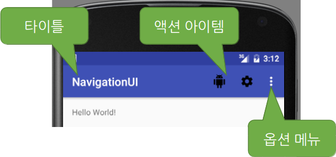
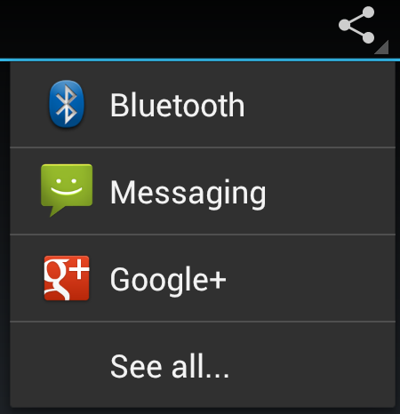
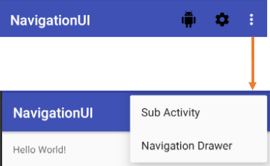
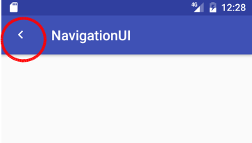
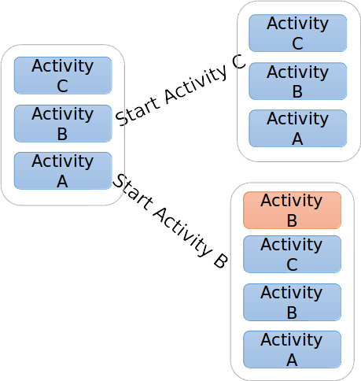

layout: true .top-line[] --- class: center, middle # 액션바와 네비게이션 --- ## 액션바(Action Bar) * 타이틀 * 메뉴 - 액션 아이템 - 액션바에 표시 - 액션바가 좁으면 ... 옵션 메뉴로  * **참고:** Action Provider를 이용하여 Share를 구현할 수 있음 -  - https://developer.android.com/training/appbar/action-views.html --- ## 액션 아이템 * 빠르게 액션을 실행 * 자주 사용되는 것은 아이콘으로 액션 바에 * 나머지 추가 액션 아이템은 옵션 메뉴로 * menu.xml을 이용하여 생성  --- ## 액션 아이템 * MainActivity – onCreateOptionsMenu() 오버라이드 ```java public class MainActivity extends AppCompatActivity { @Override * public boolean onCreateOptionsMenu(Menu menu) { MenuInflater inflater = getMenuInflater(); * inflater.inflate(R.menu.main_menu, menu); // R.menu.main_menu => menu/main_menu.xml return super.onCreateOptionsMenu(menu); } ``` .footnote[https://github.com/jyheo/AndroidTutorial/blob/master/NavigationUI/app/src/main/java/com/example/jyheo/navigationui/MainActivity.java] --- ## 액션 아이템 - main_menu.xml ```xml <menu xmlns:android="http://schemas.android.com/apk/res/android" xmlns:app="http://schemas.android.com/apk/res-auto"> <item android:id="@+id/quick_action1" android:title="Quick1" * android:icon="@drawable/ic_android_black_24dp" * app:showAsAction="ifRoom"/> <item android:id="@+id/action_settings" android:title="@string/action_settings" * android:icon="@drawable/ic_settings_black_24dp" * app:showAsAction="ifRoom"/> <item android:id="@+id/action_subactivity" android:title="Sub Activity"/> <item android:id="@+id/action_navdrawer" android:title="Navigation Drawer"/> </menu> ``` <div style="top:200px; right:100px; position:absolute; border:2px solid; background:#fff"; padding: 5px;> app:showAsAction<br/> - ifRoom<br/> - never<br/> - withText<br/> - always<br/> </div> .footnote[https://github.com/jyheo/AndroidTutorial/blob/master/NavigationUI/app/src/main/res/menu/main_menu.xml] --- ## 액션 클릭 이벤트 ```java public class MainActivity extends AppCompatActivity { @Override * public boolean onOptionsItemSelected(MenuItem item) { * switch (item.getItemId()) { case R.id.quick_action1: // return true; case R.id.action_settings: // return true; case R.id.action_subactivity: startActivity(new Intent(this, SubActivity.class)); return true; case R.id.action_navdrawer: startActivity(new Intent(this, NavDrawerActivity.class)); return true; default: return super.onOptionsItemSelected(item); } } ``` .footnote[https://github.com/jyheo/AndroidTutorial/blob/master/NavigationUI/app/src/main/java/com/example/jyheo/navigationui/MainActivity.java] --- ## 위로 돌아가기(Up 네비게이션) * 현재 보이는 액티비티에서 부모 액티비티로 되돌아가기 - 부모 액티비티는 AndroidManifest.xml에 미리 정의해 둬야 함 ```xml <application ... > <activity android:name=".SubActivity" * android:parentActivityName=".MainActivity" /> </application> ```  **주의!** 백 버튼으로 뒤로 가기는 백 스택에서 이전 액티비티로 가는 것임 --- ## 위로 돌아가기 – 액티비티 * ActionBar의 setDisplayHomeAsUpEnabled(true) 호출 ```java public class SubActivity extends AppCompatActivity { @Override protected void onCreate(Bundle savedInstanceState) { super.onCreate(savedInstanceState); setContentView(R.layout.activity_sub); * ActionBar actionBar = getSupportActionBar(); // Support Library를 사용하지 않는다면(즉, Activity를 상속 받았다면) getActionBar()를 호출해야 함 if (actionBar != null) { * actionBar.setDisplayHomeAsUpEnabled(true); // [위로 가기 버튼의 모양을 바꾸기 위한 코드] * Drawable drawable = getDrawable(R.drawable.ic_keyboard_arrow_left_black_24dp); * if (drawable != null) { * drawable.setTint(Color.WHITE); * actionBar.setHomeAsUpIndicator(drawable); * } } } } ``` --- ## 백 스택(Back Stack) * 액티비티 실행 히스토리가 스택 형태로 기록되는 것 * 새로 액티비티가 실행되면 화면에 보이던 액티비티는 백 스택으로 들어가고 * 백 버튼을 누르면 백 스택의 가장 위에 있는 액티비티가 다시 표시됨 <img src="https://developer.android.com/images/fundamentals/diagram_backstack.png"> .footnote[출처: https://developer.android.com/guide/components/tasks-and-back-stack.html] ??? Activity1이 샐행중인 상태에서 Activity2가 실행되고, 다시 Activity3가 실행되면 백스택은 Activity1, 2, 3가 쌓인 상태가 되고 백 버튼을 누르면 백스택 가장 위에 있는 Activity3가 사라지면서 Activity2가 나타나게 됨 --- ## 태스크(Task) * 액티비티의 집합, 태스크 마다 백 스택으로 쌓여 있음 * Foreground task - 현재 화면에 표시되는 태스크 – Task B * Background task - 현재 화면에 표시되지 않고 뒤에서 실행 중인 태스크 – Task A * 태스크의 생성 - 앱을 새로 실행하면 새 태스크가 생성되거나 Background로 실행 중이면 Foreground로 되돌아감 - 액티비티의 **시작 모드**로 새 태스크를 생성하게 할 수 있음 * 홈 버튼을 누르면 태스크가 백그라운드로 감 <img src="https://developer.android.com/images/fundamentals/diagram_multitasking.png" style="top:180px; right:50px; position:absolute;"> .footnote[출처: https://developer.android.com/guide/components/tasks-and-back-stack.html] --- ## 액티비티 시작(Launch) 모드 * standard: 기본 모드, 항상 새로 액티비티 인스턴스를 태스크 내에 생성함 * singleTop: 태스크의 백 스택 탑에 이미 동일한 액티비티 인스턴스가 존재하면 새로 만들지 않고 onNewIntent() 메소드를 호출함 * singleTask: 태스크를 새로 만들고 새 태스크에 액티비티 인스턴스를 생성함. 단, 이미 액티비티 인스턴스가 존재하고 있다면 그 액티비티의 onNewIntent() 메소드를 호출하고 해당 태스크를 foreground로 가져옴 * singleInstance: singleTask와 같은데, 태스크에 하나의 액티비티 인스턴스만 존재할 수 있음 --- ## 액티비티 시작 모드 .left-column-50[ * SignleTop  ] .right-column-50[ * SingleTask <img src="https://developer.android.com/images/fundamentals/diagram_backstack_singletask_multiactivity.png"> ] --- ## 액티비티 시작 모드 지정하기 * In Android Manifest ```xml <activity android:name=".SingleTopActivity" android:launchMode="singleTop"> </activity> ``` * In Java Code ```java Intent singleTop = new Intent(); ... singleTop.setFlags(Intent.FLAG_ACTIVITY_SINGLE_TOP); ... ``` - 인텐트 플래그 - FLAG_ACTIVITY_NEW_TASK – singleTask 모드 - FLAG_ACTIVITY_SINGLE_TOP – singleTop 모드 - FLAG_ACTIVITY_CLEAR_TOP – 이미 액티비티 인스턴스가 foreground 태스크에 존재한다면 위에 있는 액티비티 인스턴스는 모두 제거하고 해당 액티비티의 onNewIntent() 메소드 호출